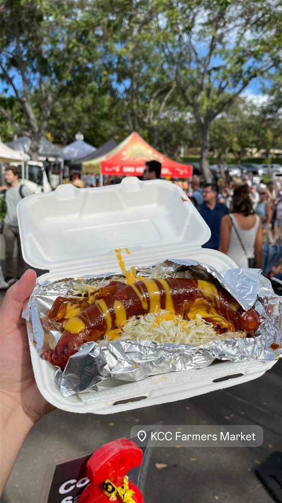
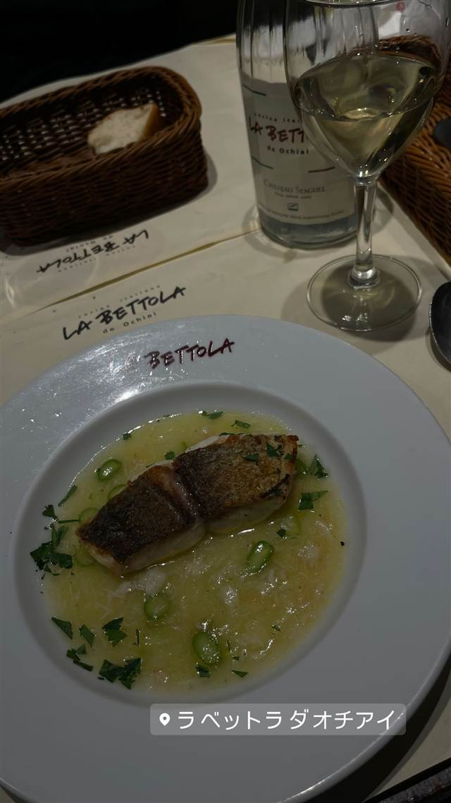
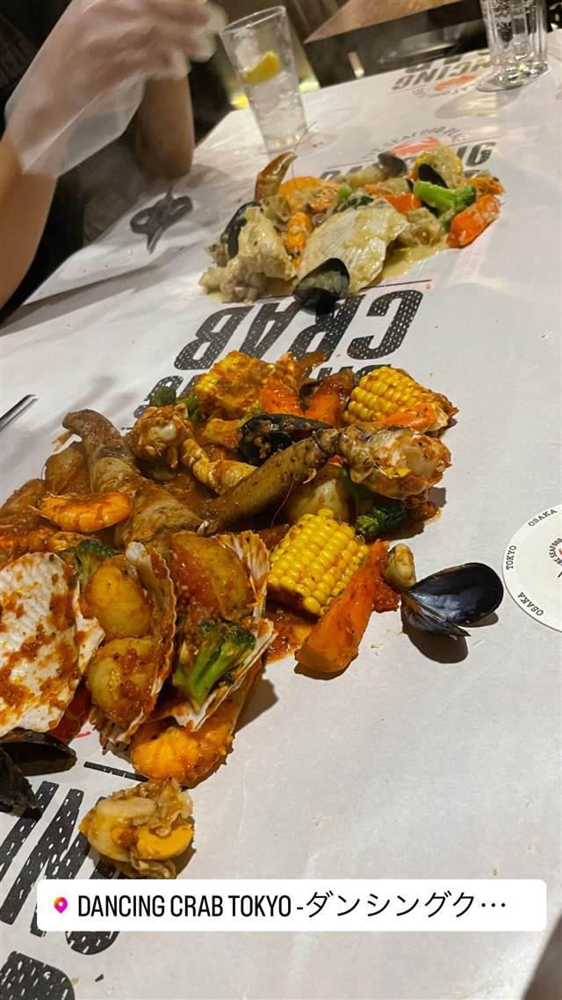
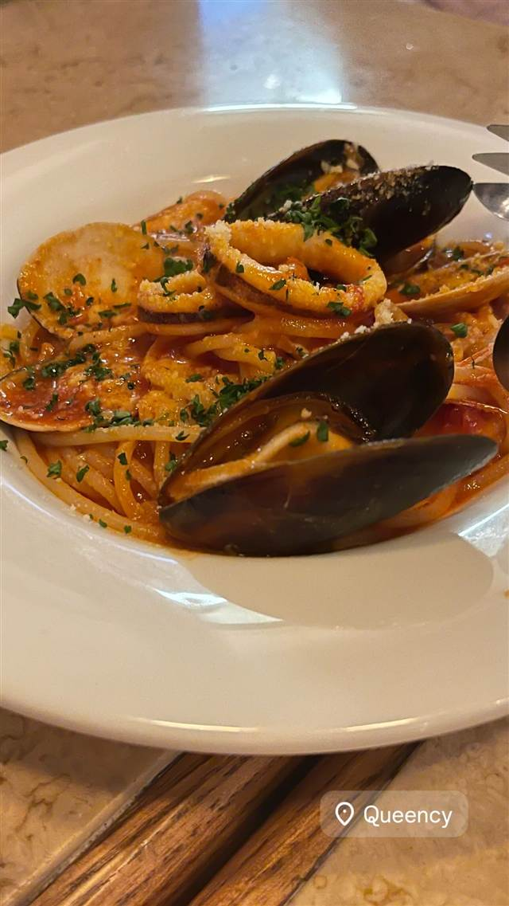
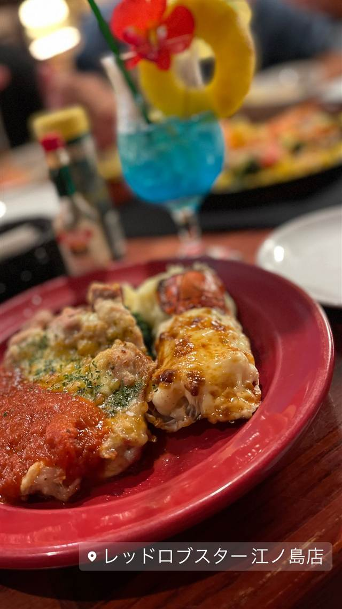

海鮮・魚 · シーフード（洋） · ダイヤモンドヘッド
KCC Saturday Farmers' Market
生産者自身が売る地元産限定の朝市は12軒から60軒に拡大
KCC Farmers Market
2003年9月、地元産にこだわった規約のもとキャピオラニ・コミュニティ・カレッジの構内で始まった朝市。当初12軒だった出店者は数年で60軒規模に成長し、地元客・観光客双方に親しまれる名物マーケットとなった。
TRIVIA
豆知識
- 2003年の開設時はわずか12軒の出店者だったが、2008年には毎回平均60軒が出店する規模に成長した
- 開設当初の12軒のうち一部（Hiraoka Farms、Chinen Farmsなど）は今も出店を続けている
REVIEWS
世間の評判
3.08食べログ
多彩な食べ物と観光客の賑わい
- ホットドッグやアサイーボウルなど食べ物の種類の豊富さを評価する声が多い
- 観光客で賑わい、祭りのような楽しい雰囲気を味わえるという声が多い
- 近年は値段が上がり、朝食にしては割高に感じるという声も複数ある
食べログ 口コミ33件
| 創業 | 2003年9月開設 |
|---|---|
| 看板 | 地元産の新鮮な農産物、ホットドッグやロブスターロールなどのフードスタンド |
| こだわり | 出店条件は「地元産の農産物であること」「生産者自身が販売すること」「加工品もハワイ産原料を使うこと」 |
| どこから | 海外 |
| 営業時間 | 月〜金 休み 土 07:30-11:00 日 休み |
| 場所 | ダイヤモンドヘッド 米国ハワイ州ホノルル 4303 Diamond Head Rd（Kapiolani Community College構内） |
| メモ | 毎週土曜7:30〜11:00、キャピオラニ・コミュニティ・カレッジ構内で開催。近年は観光バスも訪れる人気スポットに |
食べたもの：ホットドッグ / ココナッツジュース / ロブスターロール
NEARBY
近い店・同じ系統の店
-

シーフード（洋） 新富町／銀座一丁目 ラ・ベットラ・ダ・オチアイ（LA BETTOLA da Ochiai） 落合務シェフが手がけるビブグルマン選出のウニのスパゲティ 昼 ¥3,000～¥3,999 夜 ¥8,000～¥9,999 -
 シーフード（洋） 蒲田駅
crab台風。
香港出店時代に店主が考案した蟹そばを渡り蟹と豚骨で仕立てた一杯
昼 ～¥999 夜 ～¥999
シーフード（洋） 蒲田駅
crab台風。
香港出店時代に店主が考案した蟹そばを渡り蟹と豚骨で仕立てた一杯
昼 ～¥999 夜 ～¥999
-
 シーフード（洋） 恵比寿駅
サカナバル 恵比寿店
シーフードバルの先駆け、ブイヤベースの残りはリゾットに
夜 ¥3,000～¥3,999
シーフード（洋） 恵比寿駅
サカナバル 恵比寿店
シーフードバルの先駆け、ブイヤベースの残りはリゾットに
夜 ¥3,000～¥3,999
-

シーフード（洋） 新宿 DANCING CRAB Tokyo フォークを使わず手づかみで食べるケイジャン風シーフード 夜 ¥6,000～¥7,999 -

シーフード（洋） 表参道駅 cafe terrace & bistro Queency SUPER GTの名門チームが手がけた屋上テラスのシーフードパスタ 昼 ¥2,000～¥2,999 夜 ¥5,000～¥5,999 -

シーフード（洋） 片瀬江ノ島駅 レッドロブスター 江ノ島店(Red Lobster) 新江ノ島水族館の向かいに立つ現存最古の旗艦店 昼 ¥2,000～¥2,999 夜 ¥5,000～¥5,999